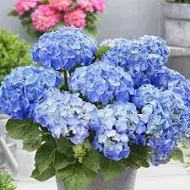
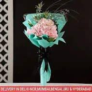

hydrangea

Hydrangea macrophylla (Any Color)
range: ₹ 339.
Product Details:
- One of the best flowering plants
- The flower color varies depending on soil pH.
- Rosy-pink is alkaline soils, the flowers turn rich blue in acidic soils.
- Bears elegent large clusters of star-shaped flowers.

blissfull pink hydrangea Bouquet
range:₹ 1899
Product Details:
- One Pink Hydrangea
- One Eryngium
- One Limonium
- Green Fillers
- Wrapped in Frosted Film Paper
- Tied with Black Ribbon
Hydrangea With Leaves
range:₹ 499
Product Details:
Product Details:
- Hydrangeas with leaves are colourful flowers .
- with buds and leaves that gives them the look of a fresh hydrangea.
- Small textures on the stem of the flower give a natural look of thorns.
- which can be escalated by spraying aromatic oils or perfumes to add some fragrance .
- and replace potpourri with fragrant flowers.
- Colourful hydrangeas can be paired with dry flowers.
- to elevate the look of any balcony or terrace garden.